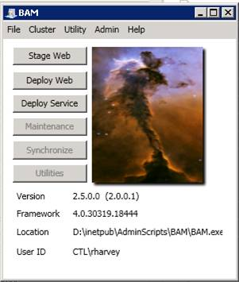
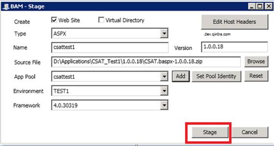
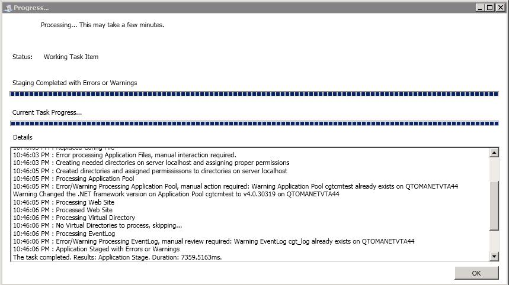
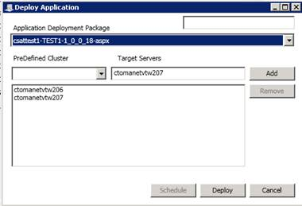

Quick Steps without pictures:
- Login to stager usomawvdntst01.test.intranet
- Navigate to D:\Inetpub\AdminScripts\BAM\BAM-2.5.0.0 and open as administrator
- Click on stage web option
- Scroll to Type of ASPX, fill out site name: csattest1, scroll to TEST1 for environment, Scroll to 4.0.30319 for Framework. (Application pool can be left blank or fill in, it doesn’t matter)
Click the browse button to navigate to the Source file and the version number will be automatically filled in once you do that. - Now progress window gets displayed .wait till you get the message “task completed “in the details. Then select “ok”
- Now choose deploy web option from the BAM tool for ASMX/ASPX or choose Deploy Service option foe WinSvcs/Tibco services.
- Chose the appropriate package from the application deployment package and then enter the server names (from the inventory) to the target servers field and select “ADD”.
- Now select “deploy”
- That's it Installation is done and Follow the same procedure for other components also



